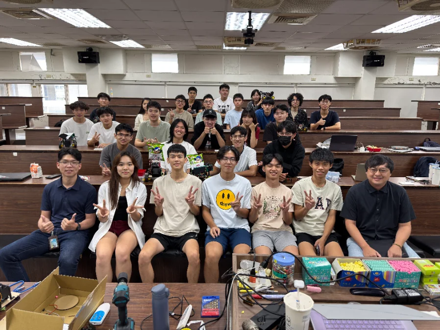
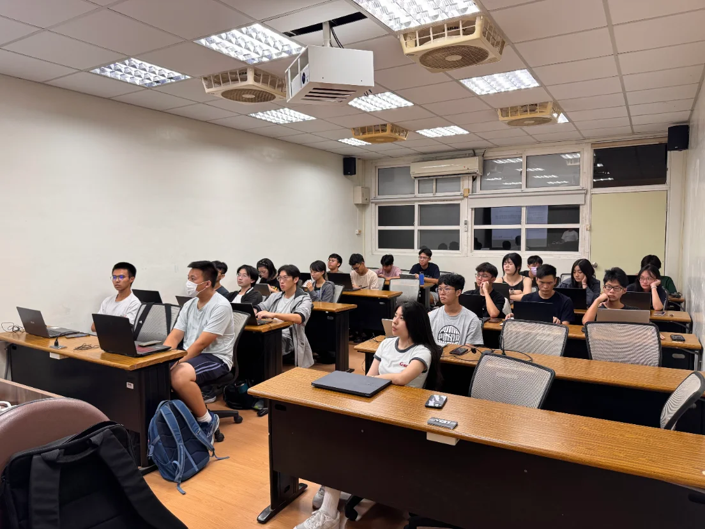
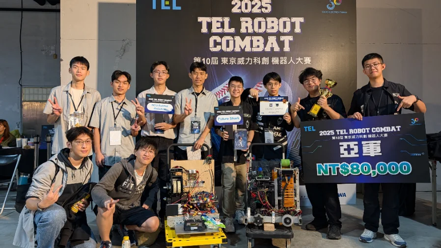
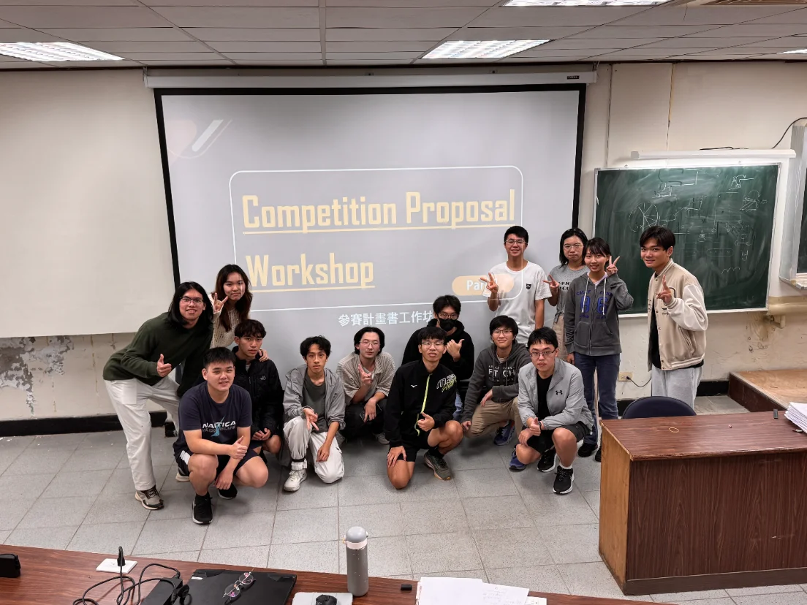
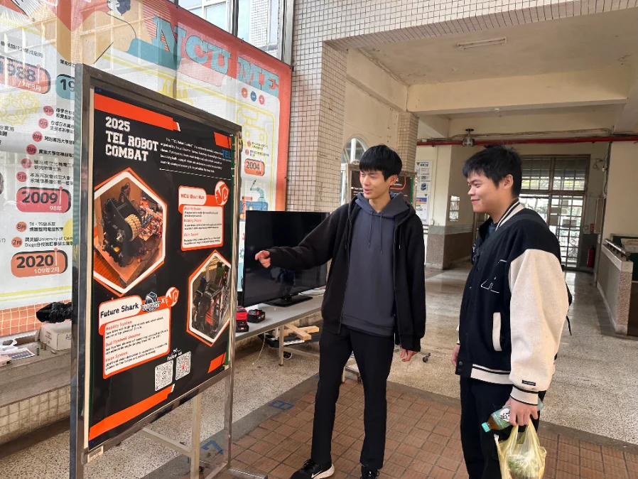
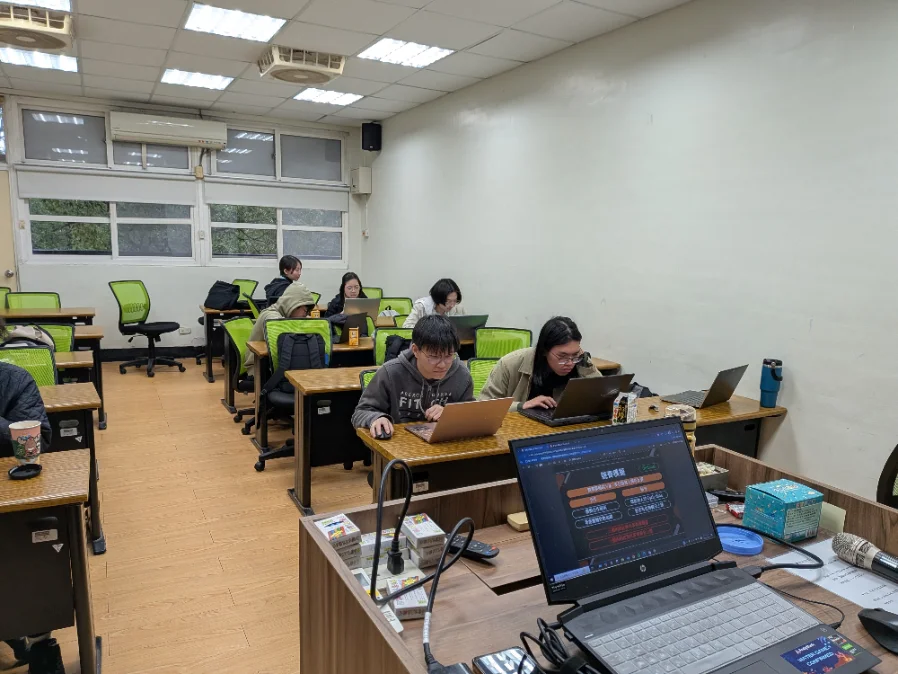
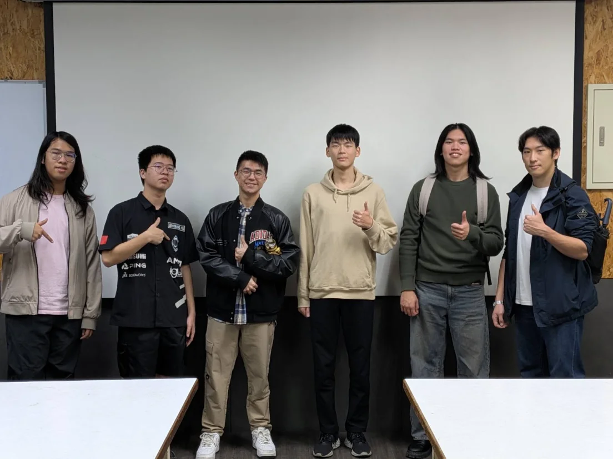
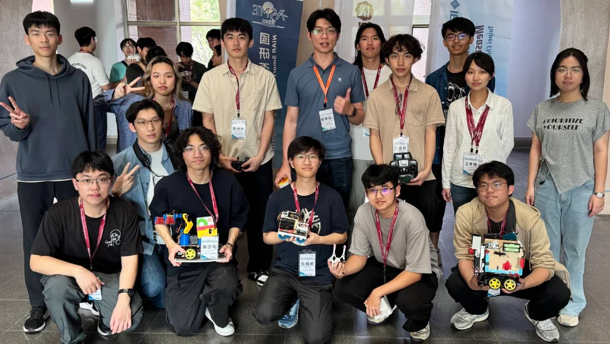
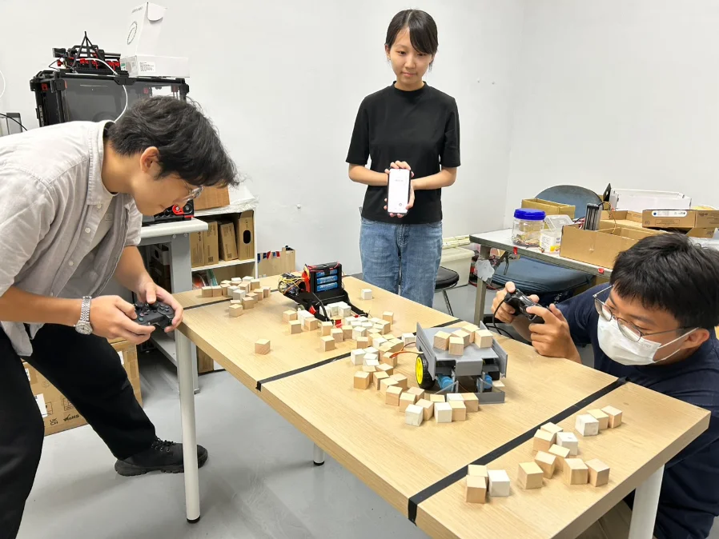

過往活動成果 / ACTIVITIES
從招生說明會到暑訓營、競賽戰績與學術交流 — BoltNut 依時間軸走過的足跡

2025.08 · Taoyuan ‧ NCU
暑期體驗營
首屆暑期培訓營，5 天共 40 小時，培訓 21 名學員建立機械設計、電控、3D 列印與程式控制等基礎能力，全員完成基本建模與電控實作，成功製作可運行的基礎機器人。
95%
出席率
4.7/5
滿意度
2500+
紀錄瀏覽

2025.09 – 2026.06 · Taoyuan ‧ NCU
大一培訓課程
招收 23 名新生，歷時一學年、共 16 堂課、超過 48 小時，建立機械製圖、3D 列印、電子電路與 Arduino 控制等基礎能力，並以隊內競賽專題作為成果驗收。
23人
招收學員
16堂
課程
48hr+
累積時數

2025 · KAOHSIUNG
東京威力科創機器人大賽
與陽明交通大學、清華大學及台灣師範大學跨校組成「Future Shark」隊伍，於全台頂尖隊伍雲集的賽事中展現設計與協作實力，最終榮獲亞軍。

2025.11 · Taoyuan ‧ NCU
競賽企劃書工作坊
15 名學員全員參與，課程完成度 100%，涵蓋比賽規則、機器人設計、策略分析與需求計算，使學員首次完整掌握從策略到執行流程的思維。
100%
完成度
≥4.3
理解程度
≥4.5
講師評分

2025.11 · Taoyuan ‧ NCU
東京威力科創機器人大賽賽前發表與體驗活動
為宣傳團隊出賽東京威力科創機器人大賽，於系上舉辦 1 小時的競賽機器人發表與體驗活動，分享機器人設計成果與備賽歷程，吸引超過 20 人參與，觸及機械系、資工系、地科系等跨領域學生與不同年齡層的參與者。
20+人
參與人次
1hr
體驗活動

2025.12 · Taoyuan ‧ NCU
ASME SDC Kick-off Party
正式啟動 ASME SDC 2025–2026 備賽計畫，進行賽題解析、分組討論與機構初步構思，全員進入備戰模式。

2026.02 · TAICHUNG
企業參訪 & FRC 學術交流
赴車王電子進行贊助拜訪，獲得寶貴技術支持；同日與 FRC 7130 深度交流機器人設計思維與賽事策略。


2026.06 · TAOYUAN ‧ NCU
大一培訓課程結業與隊內競賽
大一培訓課程以隊內競賽作為成果驗收，學員從題目分析、機構設計到機電整合測試，完整體驗一台機器人從概念到成品的工程流程。